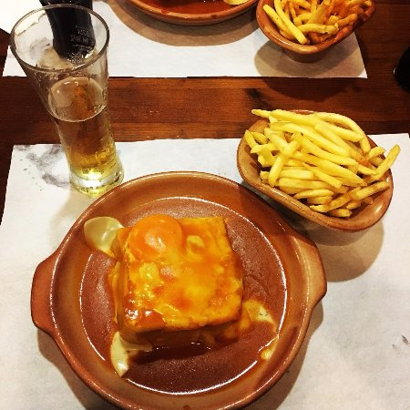

Francesinha a moda do Porto

Description
Francesinha in Portugal can be considered a sandwich and is basically three loaves of bread stuffed with meat (ham, steak, sausage, etc.).
On top theres a melted cheese that is placed on a deep plate.
Ingredients
- 6 slices of bread
- 8 slices of cheese
- 2 small beef steaks
- 2 fresh sausages
- 2 sausages
- 2 slices of ham
- Salt and pepper to taste
For the sauce
- 1 onion
- 4 dl of beer
- 3 tablespoons of tomato pulp
- 0,5 dl of brandy
- 0,5 dl of Port wine
- 1 tablespoon margarine
- 1 tablespoon of cornstarch flour
- 1 cube of broth
- 1 bay leaf
- Milk to taste
- Salt and spice to taste
Preparations instructions (steps)
- To start this recipe, prepare the sauce: peel the onion, chop it coarsely, put it in a pan,
add the margarine and the bay leaf, heat and cook until golden brown. Add the tomato pulp,
the broth, and the beer and let it boil. Dissolve the cornstarch flour in a little milk and add to the pan,
stirring constantly. Rectify the salt, season with spice, stir, add the brandy and the Port Wine and let it boil.
Strain through a sieve and return to a simmer to heat.
- Cut the sausages in half, then in half lengthwise again and season them with salt and pepper.
Also cut the sausages in the same way. Season the steaks with salt and pepper as well.
Grill the steaks, sausages and sausage to taste.
- Lightly toast the slices of bread and distribute two slices on two plates. Cover with a slice of ham,
then add the steak and place another slice of bread.
Then add the sausage and the sausage, cover with a slice of cheese and the remaining bread.
Then add three slices of cheese on top of each set, bake at 200°C until melted, remove and serve hot drizzled with the sauce.